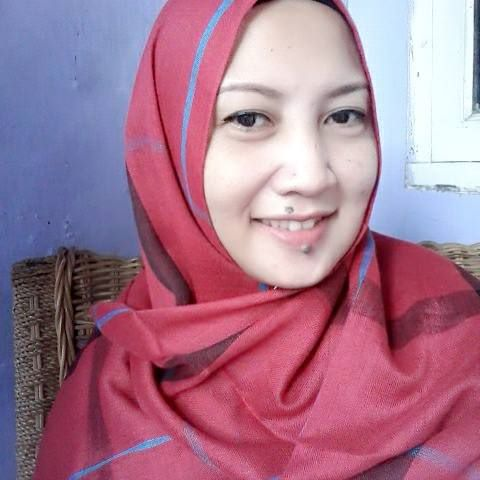

Perkenalan
Menjadi seorang single mom dengan 5 orang anak itu susah-susah gampang tapi menyenangkan,kl di bayangin pasti ribet,rusuh,capek,,ga usah di bayangin deh kl gt hehe,,atau mau rasain skalian? eh jangan ...punya 5 anak dengan beda usia yg deket itu ga gampang lho,d jamin rumah pasti berisik dan berantakan,tp beneran seru,,ya kl d seru2in sih,,hehe,,mau kenal ama anak2 ku??
Anak yg pertama namanya Alfredo,panggilannya sih kk Al,badannya tinggi besar dgn tinggi 195cm,berat badan nyampe 100kg,dia skrng kls 2 SMK jurusan tekhnik mesin.
Anak yg k 2 namanya Siera May,panggilannya kk Sie,tinggi badannya 170cm,berat badan 55kg,kk Sie skrng kls 2 SMP,kk Sie ini hoby nya dance,denger musik,paling seneng ikut berbagai macam lomba d skolah nya,,kk Sie paling item sendiri lho d rmh,hehe
Anak k 3 namanya Naysilla,panggilannya kk Esil,kk Esil kls 1 SMP,rambutnya kriting sndiri d rmh,tinggi 173cm,berat 75kg tp suka ngaku 60kg,malu katanya kegedean,,kk esil ini yg paling sabar d rmh,seneng bgt ngurusin adek nya soalnya.
Anak k 4 namanya Gavin Brava,panggilan gavin,gavin skrng kls 2 SD,kl gavin ini anak paling aktiv rmh,paling seneng ama binatang tp kl d suruh miara ga pernah bnr,mati smua.
Anak k 5 namanya flavia Azalea,panggilannya Cia,cia paling mungil d rmh,paling centil,paling cerewet dan paling sgalanya,cia kls 1 SD,hobi nya ngaca,hehe..